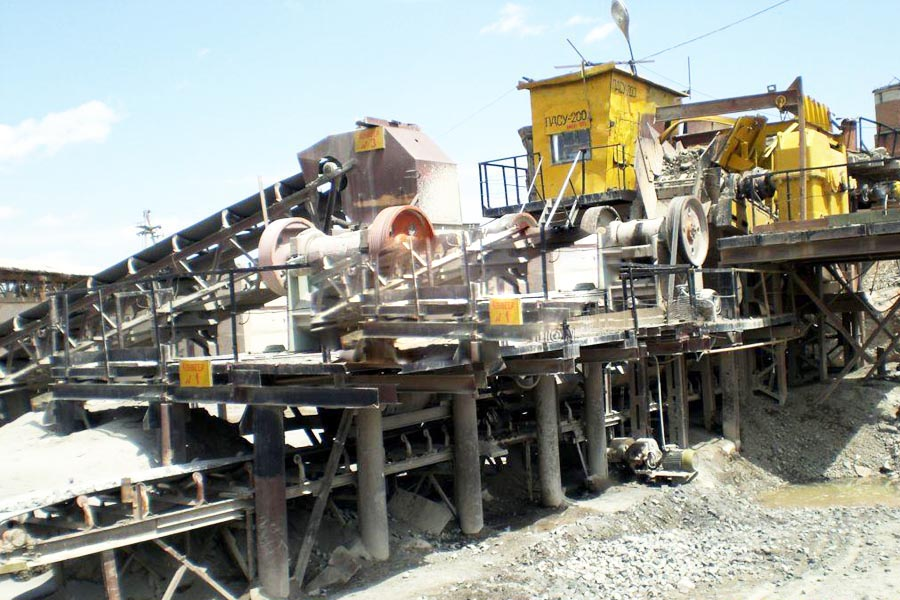

Construction waste crushing production line

Mobile construction waste crushing station for urban construction waste crushing.
gold ore crusher machine
gold ore crusher machine. Gold ore crusher, gold ore production process, gold ore crusher, gold ore, CAG the first mining crushing solutions provider, focused gold ore processing three decades, to provide you with a full range of gold ore crushing processing equipment and to provide you with comprehensive technical support.
Ore crusher | Iron Ore crusher | gold ore crusher | copper ore crusher | molybdenum ore crusher, ore crusher can be used for iron ore, granite, shale, stone crushing, secondary and tertiary crushing, so also called iron ore crusher, granite crusher and shale crusher.

Gold ore crushing production line
CAG Machinery (Gold ore crushing production line) in mineral processing aspects widely used, many customers get more benefits, CAG product also mainly for minerals, rock crusher, mineral grinding, sand stone and mineral processing and other fields. We provide Gold ore crushing production line technical guidance, based on your specific needs, for your rational design of production lines.
Because the tariff is low, you can (Gold ore crushing production line) to save a lot of costs, it can also be purchased to get more benefits, our products and designs for you is really value for money.
Gold ore crusher introduced important part, gold ore crusher important part of presentation, gold ore crusher is the major crushing brittle materials provided fine reefs. Gold ore crusher is a brittle material fine reefs major crushing equipment, widely used in mining, smelting, water conservancy.
Gold ore crushing production line:
vibrating feeder + PE series jaw crusher + PY series cone crusher + circular vibrating screen;
vibrating feeder + PE series jaw crusher + PY series cone crusher + PCX vertical impact crusher + circular vibrating screen
China's leading gold mining equipment manufacturer
gold ore crusher machine. What can crusher equipment crushing gold ore? More crushing gold ore crusher equipment that can be selected, depending on the feed size, finished crushing equipment requires a reasonable choice.
Gold ore concentrator - GOLD crusher - GOLD Separator analysis _CAG Machinery Co., CAG is a professional gold ore beneficiation machine manufacturer, is also a professional gold ore equipment manufacturers; complete sets of gold ore beneficiation machine is mainly composed of gold ore crusher, gold ball, gold and other mineral processing machinery constitute separator; detailed with gold craft.
Leave Me A Message, Now
If you have any questions regarding equipment prices, production line configuration or other problems, you can send a message to us, we will contact you soon.